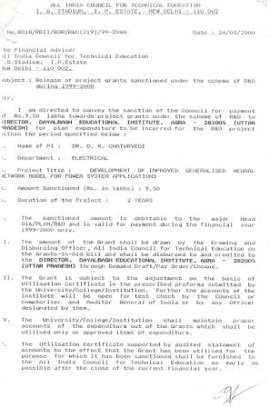
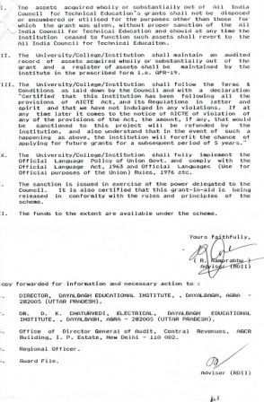

 |
- AICTE R & D Project, Development of Improved Generalized Neural Network Model for Power System Applications, (F.No. 8018/RDII/BOR/R&D (219)/99-2000), Rs.9.5 Lakhs, 2-Years(31.3.1999- 31-3-2002).(completed)
- Prof. D.K. Chaturvedi, received a project of Rs. 3.2Lacs from All India Council for Technical Educational (AICTE) Delhi for the duration of three years from 1/5/09 to 31/3/2012 on the topic "Parameters Estimation of alternator using Soft Computing Techniques". . (completed).
|